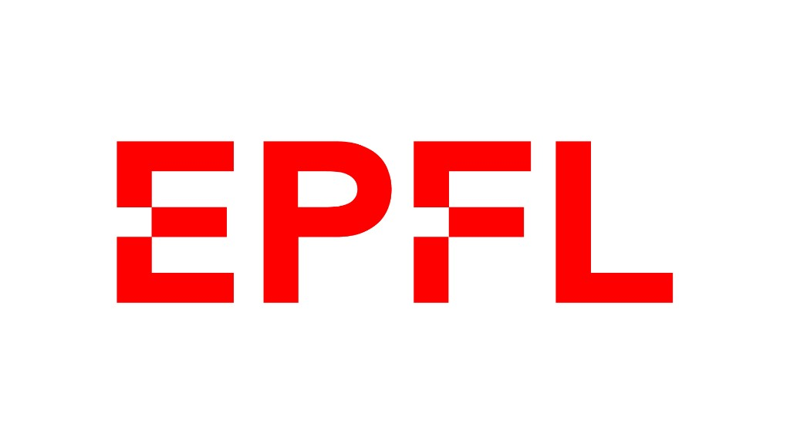
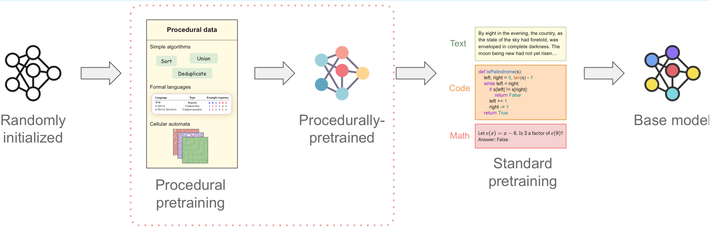
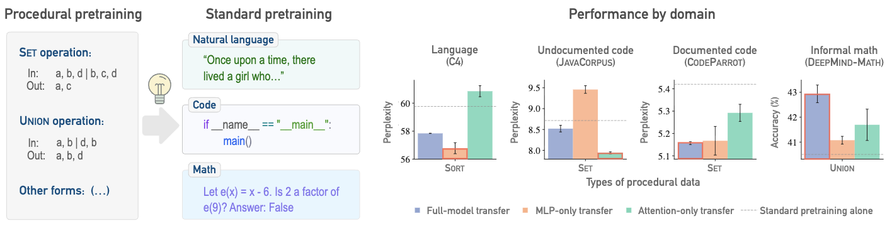
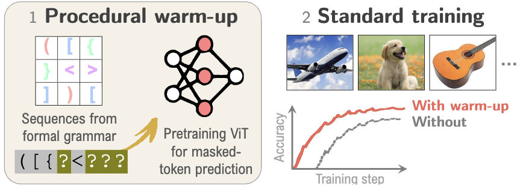
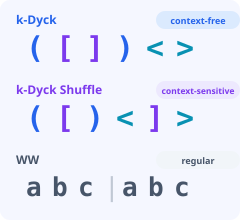
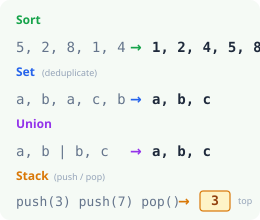
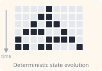
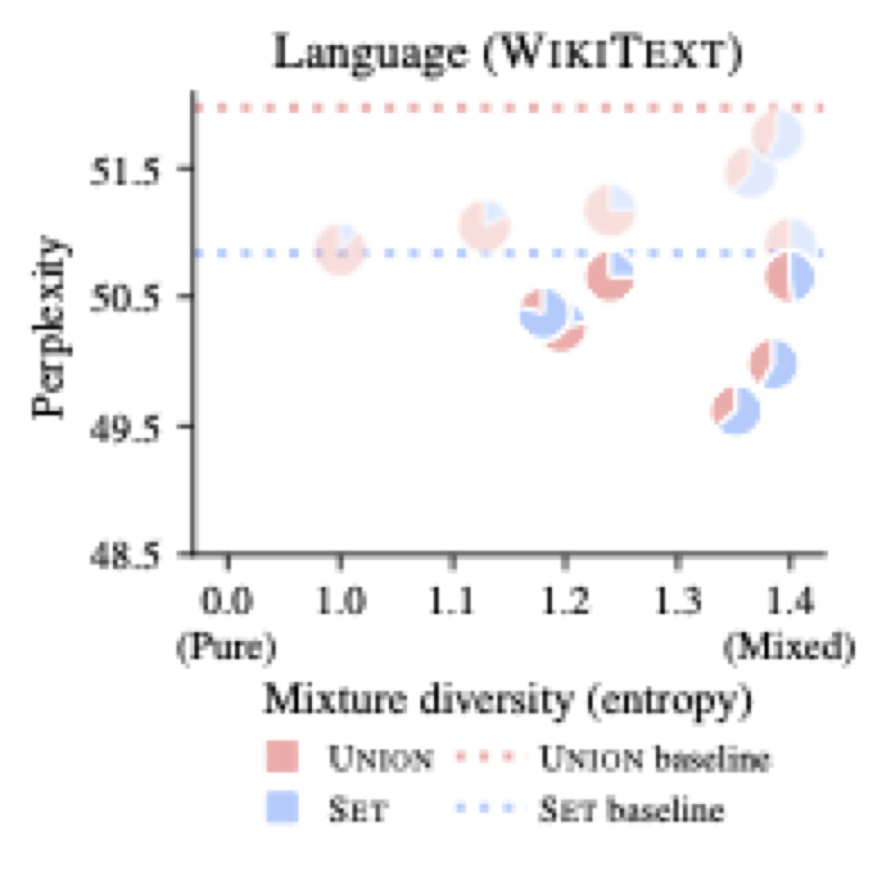
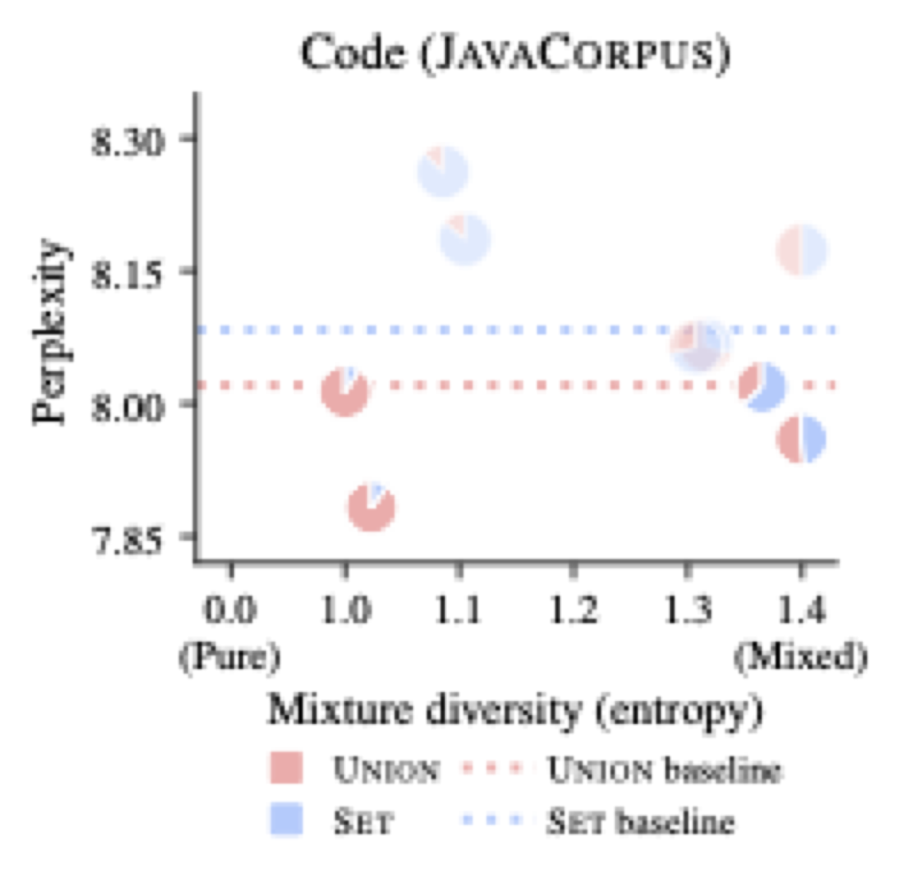

Pretraining on procedurally generated, abstract structured data for improving performance and data efficiency across language, code, math, and vision.


Current pretraining paradigms expose models directly to web-scale data, text, code, images, expecting them to simultaneously learn both world knowledge and reasoning mechanisms. We show that a brief initial exposure to procedural data, sequences generated by formal grammars and simple algorithms, completely devoid of semantic content, can dramatically improve subsequent training.
Much like how infants learn simple logic and pattern matching before higher reasoning, procedural pretraining builds general computational mechanisms into transformers before they encounter real-world data. This scaffolding accelerates convergence, improves final performance, and reduces data requirements across diverse domains.
We demonstrate these benefits for large language models (on natural language, code, and mathematics) and for vision transformers (on image classification), showing that procedural data injects useful modality-agnostic priors that complement standard training.

* Equal contribution
@article{jiang2025proceduralpretraining,
title={Procedural Pretraining: Warming Up Language Models with Abstract Data},
author={Jiang, Liangze and Shinnick, Zachary and van den Hengel, Anton and Saratchandran, Hemanth and Teney, Damien},
journal={arXiv preprint arXiv:2601.21725},
year={2026},
}
@inproceedings{shinnick2026canyoulearn,
title={Can You Learn to See Without Images? Procedural Warm-Up for Vision Transformers},
author={Shinnick, Zachary and Jiang, Liangze and Saratchandran, Hemanth and Teney, Damien and van den Hengel, Anton},
booktitle={Proceedings of the IEEE/CVF Conference on Computer Vision and Pattern Recognition (CVPR)},
year={2026},
}Talk given at ELLIS Reading Group DLMath&Efficiency.
Procedural data is generated by explicit algorithms, not by trained models. It is infinite, controllable, and verifiable. We use several families of data-generating algorithms spanning different levels of structural complexity:

k-Dyck: Balanced parentheses with hierarchical, stack-based dependencies (context-free).
k-Dyck Shuffle: Crossing and interleaved dependencies (context-sensitive).
WW: A string concatenated with its copy (regular).

Sort, Set (deduplication), Union, Reverse, Delete, Identity, sequence transformations that require precise symbol manipulation.
Stack: Simulating push/pop operations on a stack memory.

ECA Rule 110: A binary sequence evolving via deterministic Markovian dynamics. The model predicts the next state of the automaton.
Procedural pretraining is a two-stage process: a brief warm-up on procedural data, followed by standard training on the target domain. The warm-up is lightweight, typically 0.1–1% of the total training budget.
Train on procedural sequences with next-token or masked-token prediction
Continue on target domain data with standard objectives
GPT-2–style decoder-only transformers trained with next-token prediction. Procedural sequences use a character-level vocabulary. Token embeddings are reinitialized before standard pretraining since the vocabularies differ.
Standard ViTs with their visual patch embeddings bypassed, abstract symbols are mapped to random frozen embeddings instead. The model is trained for masked-token prediction. After warm-up, the procedural embeddings and prediction head are discarded, and standard image training proceeds normally.
Standard training budget is held fixed. Procedural data is added on top to measure absolute performance gains, testing whether procedural data provides a training signal that standard data alone does not impart.
Total budget is fixed. Some standard data is replaced with procedural data to measure data savings, quantifying how efficiently procedural tokens can substitute for real data without degrading performance.
A small amount of procedural data front-loaded before standard pretraining consistently accelerates training and improves final performance across natural language, code, and mathematics.
In the substitutive setting, procedural pretraining can dramatically reduce the amount of standard data needed. As little as 0.1–0.3% extra procedural tokens enables equivalent performance with far less real data.
The benefits of procedural pretraining persist and remain consistent when scaling up to 350M and 1.3B parameter models, trained on up to 10.5B tokens. Larger models continue to show clear improvements from the procedural warm-up.
These improvements also persist after downstream fine-tuning on WikiText-103, GLUE, and PY150, confirming that procedural pretraining provides lasting benefits not washed away by subsequent training.
A ViT-B/16 pretrained on procedural k-Dyck data, with just 1% of the total training budget, followed by standard ImageNet-1K training achieves a +1.72% improvement in top-1 accuracy over default initialization. This procedural data contains no visual or semantic content whatsoever.
Procedural warm-up consistently improves downstream performance across all benchmarks, with an average +3.4% absolute improvement over default initialization. It outperforms both the Mimetic structured initialization and FractalDB visual warm-up.
| Method | ImageNet-1K | Tiny-ImageNet | Food-101 | CIFAR-10 | CIFAR-100 | STL-10 |
|---|---|---|---|---|---|---|
| Default initialization | 77.49 | 55.42 | 74.52 | 91.29 | 68.52 | 60.52 |
| Mimetic initialization | 78.68 +1.19 | 57.20 +1.78 | 79.21 +4.69 | 92.89 +1.60 | 70.72 +2.20 | 65.37 +4.85 |
| FractalDB warm-up | 78.06 +0.57 | 55.17 -0.25 | 74.25 -0.27 | 88.98 -2.31 | 64.61 -3.91 | 58.62 -1.90 |
| Procedural warm-up (ours) | 79.21 +1.72 | 58.20 +2.78 | 79.47 +4.95 | 92.81 +1.52 | 71.98 +3.46 | 66.48 +5.96 |
The benefits of procedural warm-up persist even when combined with large-scale ImageNet-1K pretraining and subsequent fine-tuning. This confirms that procedural data provides a qualitatively different, complementary training signal, not merely a head-start on standard visual pretraining.
| Method | Tiny-ImageNet | Food-101 | CIFAR-10 | CIFAR-100 | STL-10 |
|---|---|---|---|---|---|
| Default init. + ImageNet | 86.59 | 89.64 | 98.59 | 87.54 | 98.55 |
| Mimetic init. + ImageNet | 87.29 +0.70 | 90.74 +1.10 | 98.68 +0.09 | 88.78 +1.24 | 98.81 +0.26 |
| FractalDB + ImageNet | 88.42 +1.83 | 90.13 +0.49 | 98.41 -0.18 | 88.35 +0.81 | 98.46 -0.09 |
| Procedural warm-up + ImageNet | 87.93 +1.34 | 90.79 +1.15 | 98.68 +0.09 | 89.20 +1.66 | 98.66 +0.11 |
In the substitutive regime, replacing only 1% of the total pretraining budget with procedural data allows the model to match the accuracy of full ImageNet-1K pretraining while using 28% fewer image samples (approximately 108 million fewer images).
Shuffling the token order within procedural sequences, preserving the token distribution but destroying the structural dependencies, eliminates all benefits and can even hurt performance. This confirms that the gains arise from the algorithmic structure in the data, not from token frequency or co-occurrence statistics.
Different types of procedural data significantly improve specific algorithmic skills. Shuffling the sequences (removing structure) drops performance back to baseline.
Shuffling k-Dyck sequences preserves token frequencies but removes hierarchical structure. Performance drops below even random initialization.
| Method | CIFAR-100 (%) |
|---|---|
| Default initialization | 68.52 |
| k-Dyck warm-up | 71.98 +3.46 |
| k-Dyck (shuffled sequences) | 67.22 -1.30 |
The useful information from procedural pretraining is distributed across both attention and MLP layers, but the importance of each depends on the target domain:
Most important for structured domains like pure code (JavaCorpus). Attention-only transfer from procedural pretraining outperforms full-model transfer in some cases.
Most important for natural language (WikiText, C4). MLP-only transfer can require even fewer tokens than full-model transfer in the substitutive setting.
For domains mixing language with structure (documented code, informal math), full-model transfer combines benefits from both types of layers.
In vision transformers, the procedural warm-up primarily affects the late (deep) layers, which account for most of the performance gains. This is a surprising finding, since standard visual pretraining is known to act primarily on early layers that capture low-level features. It suggests that procedural warm-up provides a qualitatively different type of signal.
| Transferred Layers | CIFAR-100 (%) |
|---|---|
| Default initialization | 68.52 |
| First 4 layers | 68.91 +0.39 |
| Middle 4 layers | 70.19 +1.67 |
| Final 4 layers | 71.66 +3.14 |
| All layers | 71.98 +3.46 |
The benefits of different types of procedural data are additive. Two combination strategies show promise:
Pretraining on a mixture of multiple types of procedural data (e.g., Set + Union) can outperform either type alone, achieving better perplexity on both language and code.
Assembling a model from the attention layers of one procedurally-pretrained model and the MLP layers of another yields strong performance across all evaluation tasks, combining complementary skills modularly.


| Configuration | Haystack | Addition | Rev. Add. | Sort | Avg. |
|---|---|---|---|---|---|
| No procedural pretraining | 11.3 | 59.1 | 76.4 | 82.7 | 57.4 |
| SET (attention-only) | 88.9 | 81.1 | 54.4 | 98.1 | 80.6 |
| ECA (full-model) | 10.5 | 69.6 | 91.0 | 76.9 | 62.0 |
| SET (attn.) + ECA (MLP) | 94.4 | 80.3 | 82.9 | 99.4 | 89.3 |
@article{jiang2025proceduralpretraining,
title={Procedural Pretraining: Warming Up Language Models with Abstract Data},
author={Jiang, Liangze and Shinnick, Zachary and van den Hengel, Anton and Saratchandran, Hemanth and Teney, Damien},
journal={arXiv preprint arXiv:2601.21725},
year={2026},
}@inproceedings{shinnick2026canyoulearn,
title={Can You Learn to See Without Images? Procedural Warm-Up for Vision Transformers},
author={Shinnick, Zachary and Jiang, Liangze and Saratchandran, Hemanth and Teney, Damien and van den Hengel, Anton},
booktitle={Proceedings of the IEEE/CVF Conference on Computer Vision and Pattern Recognition (CVPR)},
year={2026},
}